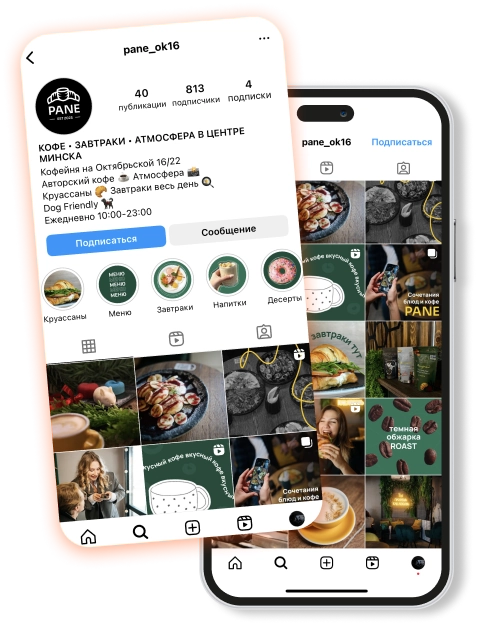
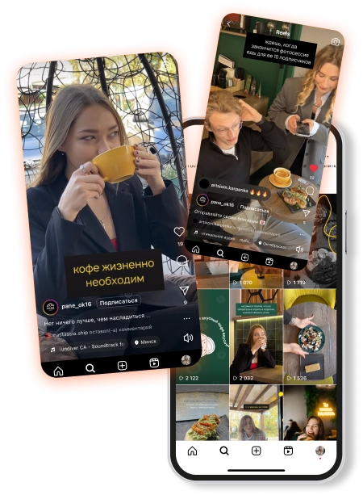
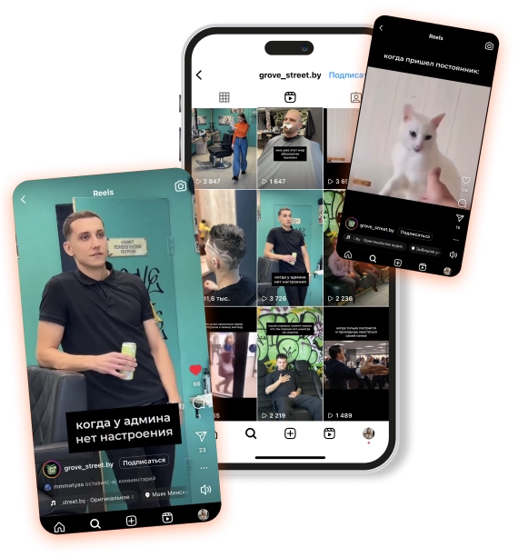

pane —
уютное небольшое кафе с завтраками целый
день в самом центре Минска
Проработали и исправили оформление аккаунта, ввели
акцентные фирменные цвета, подобрали новую шапку
профиля и качественные хештеги. Сделали акцент на
качественные фото-видеоматерилы. Разработали
стратегию контента, включая образовательные,
информационые и развлекательные материалы.

Весь акцент был построен на “вкусных” фотографиях,
живых видео и эмоциях. Качественный контент для
бренда, связанного с едой, критически важен по ряду
причин: наглядное представление того, какое качество
клиенты получат в заведении, фирменный стиль,
поддержание интереса и вовлечение аудитории.
Поэтому для создания визуала фотосессия
производилась с помощью профессионального
фотографа. Также были реализованы ролики
юмористического и информативного характера для
поднятия охватов, повышения узнаваемости и
увеличения лояльности пользователей.

to car —
удобный прокат свежих и обслуженных
автомобилей в Минске с любым сроком аренды
Так как мы столкнулись с ситуацией, где основной
аккаунт состоял на 90% из ботов или “неживых”
пользователях, было принято решение завести новую
страницу. Разработали полное визуальное оформление
и фирменный стиль компании в соответствии с
имеющимся сайтом и видением бренда. Прорабатывали
с нуля цели и ценности компании, выбор стратегии
продвижения и знакомства с пользователями.
Организовывали фотосессию для запуска аккаунта,
разрабатывали стратегию контента, включая
образовательные материалы и информацию о
путешествиях на автомобиле. Обозревали возможности
аренды в основном в видеоформате.

groove street —
барбершоп, стрижка в котором идеально
подчеркнет образ любого мужчины
Ранее в профиле размещались только фотографии
стрижек без отображения фирменного стиля и
узнаваемости. В связи с чем была разработана
стратегия внедрения графического контента, в котором
также отображалась полезная информация для
пользователей. Организовали профессиональную
фотосъемку с моделями и барберами. В социальных
сетях качественные фотографии являются ключевым
фактором привлечения внимания пользователей.
Регулярное размещение качественного материала
может помочь привлечь новых подписчиков и
увеличить активность в профиле. Стратегия
взаимодействия бренда с аудиторией была
выстроена на “персонажах” и дружеской атмосфере,
которой придерживается барбершоп. Важной целью
стояло познакомить аудиторию с людьми,
с которыми они столкнуться при записи.
Юмористический контент создавал связь
пользователя с барбершопом, так как упор шел на
“жизненные” ситуации. Также в барбершопе
реализуется продажа профессиональной косметики,
на что был сделан упор в постах разного типа.
